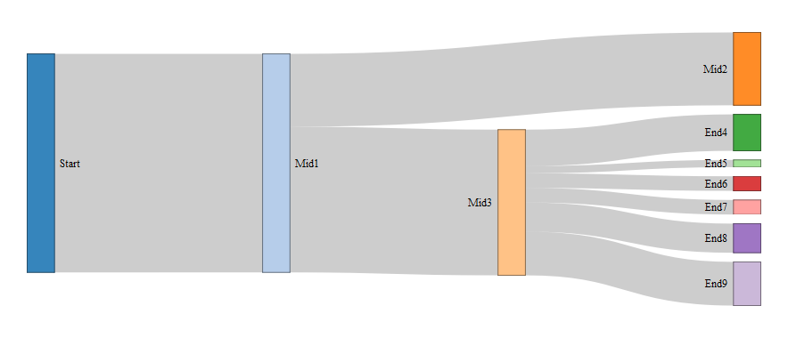
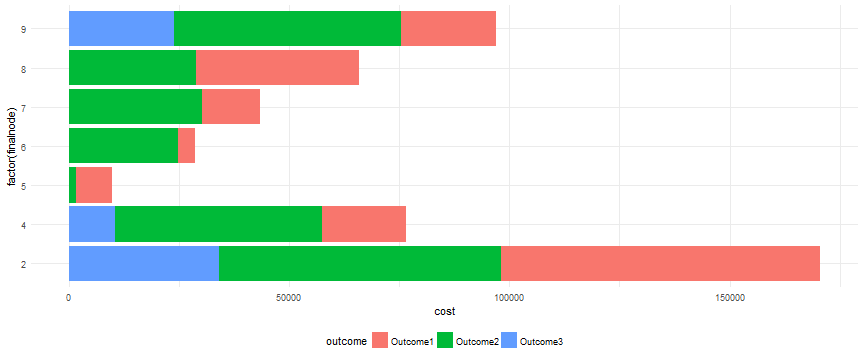

This assignment consisted of two parts:
An R Shiny application, complete with input, reactive output, and associated documentation
A Reproducible Pitch Presentation in R Studio Presenter, complete with embedded R code
This application was designed to provide insight into the flow of observations through a complex, multi-step workflow. The inital tab provides a Sankey Diagram to help visualize flow through the system. The diagram is reactive, and as cases are filtered on their underlying characteristics (e.g. priority level, expected value) the Sankey will update as well. The second tab includes a reactive bar chart that provides insight into case outcomes (e.g. cost and revenue).
This application is a proof of concept and all underyling data was simulated.

The Sankey Diagram allows users to visualize the flow of cases between steps in the workflow based on the reactive filters applied. In the example above we can see how cases start from a common point but eventually diverge towards Mid2 and Mid3.

The Bar Chart allows users to understand the costs and revenues associated with the cases selected by the reactive filters. In the example above we can see the cases that end at Node 2 (Mid2) resulted in the greatest cost to work. This is likely driven by their volume, which can be observed on the previous Sankey Diagram.